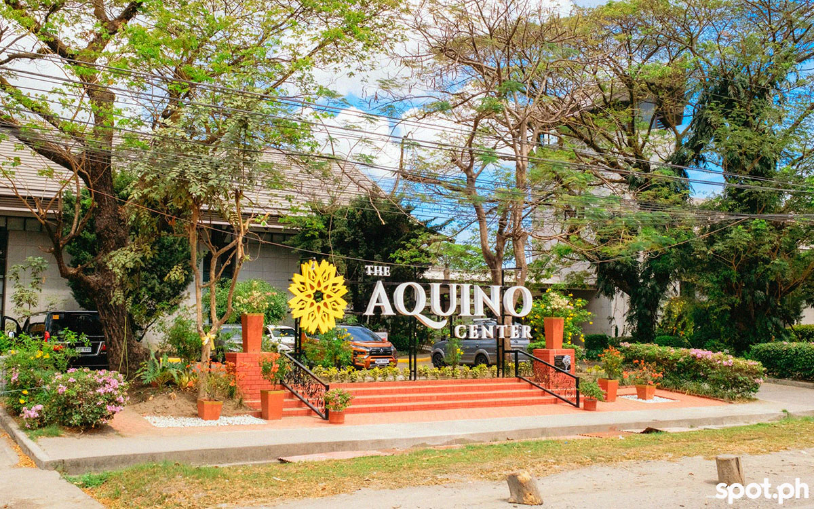

Tarlac is a landlocked province in Central Luzon, Philippines, known for its rich history, diverse culture, and breathtaking natural landscapes. From the sacred grounds of the Shrine of Apo Nmat to the cool mountain air of Mount Pinatubo's lahar fields, Tarlac offers a one-of-a-kind travel experience. Whether you're a history buff, nature lover, or food enthusiast, this province has something waiting just for you.
Why Visit Tarlac?
- Rich History: Walk the same ground as Philippine revolutionary heroes. Tarlac is home to the Aquino Center and Museum and the historic Shrine of Apo Nmat — landmarks that shaped the nation's story.
- Natural Wonders: Trek through the otherworldly lahar landscapes near Mount Pinatubo, swim in hidden waterfalls, and breathe in the fresh mountain air that makes Tarlac unforgettable.
- Warm Culture: Experience genuine Filipino hospitality at every turn. Tarlac is a melting pot of Kapampangan, Ilocano, and Pangasinense cultures, each adding flavor to local festivals, traditions, and cuisine.
- Thriving Agriculture: Known as a major producer of sugarcane, rice, and corn, Tarlac's vast farmlands offer agri-tourism experiences where visitors can connect with the land and the farmers who tend it.
Top Tourist Spots
-
 Mt. Pinatubo Crater Lake
Mt. Pinatubo Crater Lake
-
 Shrine of Apo Nmat
Shrine of Apo Nmat
-

Aquino Center & Museum -
 Anao Church
Anao Church
-
 Monasterio de Tarlac
Monasterio de Tarlac
-
 Pampanga River
Pampanga River